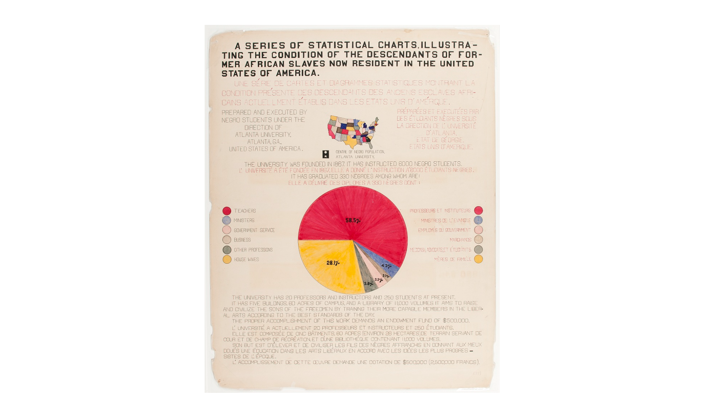

For TidyTuesday, I recreated W.E.B. Du Bois’s charts on African American conditions using R and Tidyverse for a modern analysis.
Du Bois Visualization Challenge 2024

Randi’s Chart (Rendition)
Du Bois’s Chart (Original)
The challenge this year pays homage to the profound data visualization legacy of W.E.B. Du Bois, inviting participants to reinterpret the groundbreaking visualizations he presented at the 1900 Paris Exposition with contemporary tools. Anchored by the vibrant colors of the Pan-African Flag, the challenge provides a unique opportunity to explore the intersection of history, culture, and data science.
Participants are encouraged to channel the essence of Plate 37 from Du Bois’s series, ‘A Series Of Statistical Charts Illustrating The Conditions Of Descendants Of Former African Slaves Now Resident In The United States,’ using the Pan-African Flag’s colors as a palette. This endeavor not only celebrates Du Bois’s legacy but also deepens our understanding of the historical and current conditions of African American communities.
The goal of the challenge is to celebrate the data visualization legacy of W.E.B Du Bois by recreating the visualizations from the 1900 Paris Exposition using modern tools.
For comprehensive details and to join the challenge, visit the GitHub repository!
Code
This code follows a streamlined structure organized into four distinct phases: Set-Up, Clean, Graph, and Save.
#### Packages ##### tidyverse: A collection of data-related packages.# showtext: Use various fonts. # forcats: Add factors to categorical variables. # ggtext: Used markdown on graph text. # ggrepel: Overlapping labels on graph. base::library(tidyverse)base::library(showtext)base::library(forcats)base::library(ggtext)base::library(ggrepel)#### Data ##### dubois: TidyTuesday data of occupation percentagesdubois <- readr::read_csv('https://raw.githubusercontent.com/rfordatascience/tidytuesday/master/data/2024/2024-04-02/dubois_week10.csv')#### Fonts ##### font_add_google(): Search Google Fonts. # showtext_auto(): Turn showtext on for graphics. sysfonts::font_add_google("Courier Prime", "font")showtext::showtext_auto()#### Colors ##### col1: Text # col2: Background# colors: Colors for Pie Chartcol1 <-"green"col2 <-"black"colors <-c("#ce1d40", "#a59faa", "#e4bdb0", "#d1bea6", "#9b8f7d", "#ecb95b")#### Text ##### title_text# subtitle_text# caption_texttitle_text <-"A SERIES OF STATISTICAL CHARTS. ILLUSTRA-<br>TING THE CONDITION OF THE DESCENDANTS OF FOR-<br>MER AFRICAN SLAVES NOW RESIDENT IN THE UNITED<br>STATES OF AMERICA."subtitle_text <-"<br> <span style='color:red;'>UNE SÉRIE DE CARTES ET DIAGRAMMES STATISTIQUES MONTRANT LA<br>CONDITION PRÉSENTE DES DESCENDANTS DES ANCIENS ESCLAVES AFRI-<br>CANS ACTUELLMENT ÉTABLIS DANS LES ETATS UNIS D´ AMÉRIQUE.</span> <br> <br> THE UNIVERSITY WAS FOUNDED IN 1867. <br> IT HAS INSTRUCED 6000 NEGROS STUDENTS. <br> <br> <span style='color:red;'>L´UNIVERSITÉ A ÉTÉ FONDÉE EN 1867. <br> ELLE A DONNÉ L´ INSTRUCTION A'6000 ÉTUDIANTS NEGRES.</span><br> <br> IT HAS GRADUATED 330 NEGROES AMOUNG WHOM ARE: <br> <br> <span style='color:red;'> ELLE A DÉLIVRÉ DES DIPLOMES A 330 NÉGRES DONT:</span>"caption_text <-"Randi Bolt \nApril 2024 \n#TidyTuesday \nDu Bois"
Set-Up
Packages
Data
Fonts
Colors
Text
Show Code
#### Clean Data ##### Add Columns# 1. Calculate the cumulative sum of 'Percentage' column in reverse order.# 2. Calculate the position for labels. # 3. Replace NA values in 'pos' with half of the 'Percentage' value.dubois <- dubois |> dplyr::mutate(# Calculate the cumulative sum of 'Percentage' column in reverse order.csum = base::rev(base::cumsum(base::rev(Percentage))),# Calculate the position for labels.pos = Percentage/2+ dplyr::lead(csum, 1),# Replace NA values in 'pos' with half of the 'Percentage' value.pos = dplyr::if_else(base::is.na(pos), Percentage/2, pos))
Clean
Calculate the cumulative sum of ‘Percentage’ column in reverse order.
Calculate the position for labels.
Replace NA values in ‘pos’ with half of the ‘Percentage’ value.
Show Code
#### Pie Chart ##### Data: dubois (modified with position column)# Aesthetics: x = blank, y = Percentage, fill = fct_inorder(Occupation)# Geometry: width = 1# Polarize Coordinate: theta = y, start = 1.5, directional = 1 (clockwise)# Define fill color and order# Add labels outside of pie chart. # Legend title# Define labels# Remove Grid from Pie Chart# Theme: title, subtitle, caption, legend, background, plot marginspie <- ggplot2::ggplot(# Data dubois, # Aestheticsaes(x ="" , y = Percentage, fill =fct_inorder(Occupation)) ) +# Geometrygeom_col(width =1) +# Polarize Coordinatescoord_polar(theta ="y", start =1.5, direction =1) +# Define fill color and orderscale_fill_manual(values = colors,breaks =c("Teachers", "Ministers", "Government Service", "Business", "Other Professions", "House Wives" ) ) +# Add Labels Outside Pie Chart ggrepel::geom_label_repel(# Datadata = dubois,# Aestheticsaes(y = pos, label =paste0(Percentage, "%") ),size =4.5, nudge_x =1, show.legend =FALSE,colour ="black" ) +# Legend Titleguides(fill =guide_legend(title ="") ) +# Labelslabs(title = title_text,subtitle = subtitle_text,caption = caption_text ) +# Remove Grid from Pie Charttheme_void( ) +# Themetheme(# Titleplot.title =element_markdown(size =11, hjust =0.5,lineheight =0.9,family ="font",face ="bold",color = col1),plot.title.position ="plot",# Subtitleplot.subtitle =element_markdown(size =9, hjust =0.5,lineheight =0.9,family ="font", color = col1 ),# Captionplot.caption =element_text(size =6,family ="font",color = col1,hjust =1 ),# Legendlegend.position ="left",legend.title =element_blank(),legend.text =element_text(size =8,family ="font",color = col1),legend.key =element_blank(),legend.background =element_blank(),# Backgroundplot.background =element_rect(fill = col2, color =NA),# Plot Marginsplot.margin =margin(t =20, r =20, b =20, l =20))
Graph
Data: dubois (modified with position column)
Aesthetics: x = blank, y = Percentage, fill = fct_inorder(Occupation)
The ggrepel() package includes the geom_label_repel() function, which is utilized to place chart labels outside of pie chart segments, ensuring that values are displayed clearly without overlapping the chart itself.
The pos variable, defined when cleaning, is calculated as a position for placing labels by first determining the midpoint of each item’s Percentage value and then adjusting this position based on the cumulative sum of percentages below it. This adjustment is made by adding half of an item’s own percentage to the cumulative sum of percentages of all items below it, shifted upwards by one position (dplyr::lead(csum, 1)), ensuring labels are centered appropriately on or near their respective segments. In cases where this calculation results in NA (specifically for the last item due to the lead function shifting values), pos is set to half of the item’s own percentage, ensuring every item has a defined position for its label.
The coord_polar() function customization options include:
Specifying the \(\theta\) component based on either the x or y aesthetic.
Adjusting the starting offset from the default 12 o’clock position, expressed in radians.
Setting the direction parameter to 1 for clockwise orientation or -1 for counterclockwise orientation.
The plot.title.position() argument aligns the plot’s title centrally over the entire plot area, rather than just centering it above the pie chart, for improved layout balance and title visibility.
Due to the integrated design of geom_label_repel() within the ggrepel package, altering the color of the connecting lines between the chart and the percentage values would concurrently change the text color of the percentage values. Opting to maintain these lines in black provided a visually appealing contrast, deemed superior to alternative colors such as white. This choice also streamlined the visualization process, circumventing the more time-consuming task of manually positioning percentage labels.
Source Code
---title: "Week 14 Tidy Tuesday: Du Bois Visualization Challenge"date: "2024-04-02"categories: ["#TidyTuesday", "R", "Data Visuals"]draft: falseformat: html: code-fold: true code-summary: "Show code" code-tools: true---For TidyTuesday, I recreated W.E.B. Du Bois's charts on African American conditions using R and Tidyverse for a modern analysis.# Du Bois Visualization Challenge 2024+---------------------------+----------------------------+|  |  |+---------------------------+----------------------------+| Randi's Chart (Rendition) | Du Bois's Chart (Original) |+---------------------------+----------------------------+The challenge this year pays homage to the profound data visualization legacy of W.E.B. Du Bois, inviting participants to reinterpret the groundbreaking visualizations he presented at the 1900 Paris Exposition with contemporary tools. Anchored by the vibrant colors of the Pan-African Flag, the challenge provides a unique opportunity to explore the intersection of history, culture, and data science.Participants are encouraged to channel the essence of Plate 37 from Du Bois's series, 'A Series Of Statistical Charts Illustrating The Conditions Of Descendants Of Former African Slaves Now Resident In The United States,' using the Pan-African Flag's colors as a palette. This endeavor not only celebrates Du Bois's legacy but also deepens our understanding of the historical and current conditions of African American communities.> The goal of the challenge is to celebrate the data visualization legacy of W.E.B Du Bois by recreating the visualizations from the 1900 Paris Exposition using modern tools.For comprehensive details and to join the challenge, visit the [GitHub repository](https://github.com/rfordatascience/tidytuesday/blob/master/data/2024/2024-04-02/readme.md)!# CodeThis code follows a streamlined structure organized into four distinct phases: Set-Up, Clean, Graph, and Save.::: panel-tabset### Set-Up```{r set-up}#| code-fold: true#| code-summary: "Show Code"#| warning: false#### Packages ##### tidyverse: A collection of data-related packages.# showtext: Use various fonts. # forcats: Add factors to categorical variables. # ggtext: Used markdown on graph text. # ggrepel: Overlapping labels on graph. base::library(tidyverse)base::library(showtext)base::library(forcats)base::library(ggtext)base::library(ggrepel)#### Data ##### dubois: TidyTuesday data of occupation percentagesdubois <- readr::read_csv('https://raw.githubusercontent.com/rfordatascience/tidytuesday/master/data/2024/2024-04-02/dubois_week10.csv')#### Fonts ##### font_add_google(): Search Google Fonts. # showtext_auto(): Turn showtext on for graphics. sysfonts::font_add_google("Courier Prime", "font")showtext::showtext_auto()#### Colors ##### col1: Text # col2: Background# colors: Colors for Pie Chartcol1 <- "green"col2 <- "black"colors <- c("#ce1d40", "#a59faa", "#e4bdb0", "#d1bea6", "#9b8f7d", "#ecb95b")#### Text ##### title_text# subtitle_text# caption_texttitle_text <- "A SERIES OF STATISTICAL CHARTS. ILLUSTRA-<br>TING THE CONDITION OF THE DESCENDANTS OF FOR-<br>MER AFRICAN SLAVES NOW RESIDENT IN THE UNITED<br>STATES OF AMERICA."subtitle_text <- "<br> <span style='color:red;'>UNE SÉRIE DE CARTES ET DIAGRAMMES STATISTIQUES MONTRANT LA<br>CONDITION PRÉSENTE DES DESCENDANTS DES ANCIENS ESCLAVES AFRI-<br>CANS ACTUELLMENT ÉTABLIS DANS LES ETATS UNIS D´ AMÉRIQUE.</span> <br> <br> THE UNIVERSITY WAS FOUNDED IN 1867. <br> IT HAS INSTRUCED 6000 NEGROS STUDENTS. <br> <br> <span style='color:red;'>L´UNIVERSITÉ A ÉTÉ FONDÉE EN 1867. <br> ELLE A DONNÉ L´ INSTRUCTION A'6000 ÉTUDIANTS NEGRES.</span><br> <br> IT HAS GRADUATED 330 NEGROES AMOUNG WHOM ARE: <br> <br> <span style='color:red;'> ELLE A DÉLIVRÉ DES DIPLOMES A 330 NÉGRES DONT:</span>"caption_text <- "Randi Bolt \nApril 2024 \n#TidyTuesday \nDu Bois"```**Set-Up**- Packages- Data- Fonts- Colors- Text### Clean```{r clean}#| code-fold: true#| code-summary: "Show Code"#| warning: false#### Clean Data ##### Add Columns# 1. Calculate the cumulative sum of 'Percentage' column in reverse order.# 2. Calculate the position for labels. # 3. Replace NA values in 'pos' with half of the 'Percentage' value.dubois <- dubois |> dplyr::mutate( # Calculate the cumulative sum of 'Percentage' column in reverse order. csum = base::rev(base::cumsum(base::rev(Percentage))), # Calculate the position for labels. pos = Percentage/2 + dplyr::lead(csum, 1), # Replace NA values in 'pos' with half of the 'Percentage' value. pos = dplyr::if_else(base::is.na(pos), Percentage/2, pos))```**Clean**1. Calculate the cumulative sum of 'Percentage' column in reverse order.2. Calculate the position for labels.3. Replace NA values in 'pos' with half of the 'Percentage' value.### Graph```{r graph}#| code-fold: true#| code-summary: "Show Code"#| warning: false#### Pie Chart ##### Data: dubois (modified with position column)# Aesthetics: x = blank, y = Percentage, fill = fct_inorder(Occupation)# Geometry: width = 1# Polarize Coordinate: theta = y, start = 1.5, directional = 1 (clockwise)# Define fill color and order# Add labels outside of pie chart. # Legend title# Define labels# Remove Grid from Pie Chart# Theme: title, subtitle, caption, legend, background, plot marginspie <- ggplot2::ggplot( # Data dubois, # Aesthetics aes( x = "" , y = Percentage, fill = fct_inorder(Occupation)) ) + # Geometry geom_col( width = 1) + # Polarize Coordinates coord_polar( theta = "y", start = 1.5, direction = 1) + # Define fill color and order scale_fill_manual( values = colors, breaks = c( "Teachers", "Ministers", "Government Service", "Business", "Other Professions", "House Wives" ) ) + # Add Labels Outside Pie Chart ggrepel::geom_label_repel( # Data data = dubois, # Aesthetics aes( y = pos, label = paste0(Percentage, "%") ), size = 4.5, nudge_x = 1, show.legend = FALSE, colour = "black" ) + # Legend Title guides( fill = guide_legend(title = "") ) + # Labels labs( title = title_text, subtitle = subtitle_text, caption = caption_text ) + # Remove Grid from Pie Chart theme_void( ) + # Theme theme( # Title plot.title = element_markdown( size = 11, hjust = 0.5, lineheight = 0.9, family = "font", face = "bold", color = col1), plot.title.position = "plot", # Subtitle plot.subtitle = element_markdown( size = 9, hjust = 0.5, lineheight = 0.9, family = "font", color = col1 ), # Caption plot.caption = element_text( size = 6, family = "font", color = col1, hjust = 1 ), # Legend legend.position = "left", legend.title = element_blank(), legend.text = element_text( size = 8, family = "font", color = col1), legend.key = element_blank(), legend.background = element_blank(), # Background plot.background = element_rect(fill = col2, color = NA), # Plot Margins plot.margin = margin(t = 20, r = 20, b = 20, l = 20))```**Graph**- Data: dubois (modified with position column)- Aesthetics: x = blank, y = Percentage, fill = fct_inorder(Occupation)- Geometry: width = 1- Polarize Coordinate: theta = y, start = 1.5, directional = 1 (clockwise)- Define fill color and order- Add labels outside of pie chart.- Legend title- Define labels- Remove Grid from Pie Chart- Theme: title, subtitle, caption, legend, background, plot margins### Save```{r save}#| code-fold: true#| code-summary: "Show Code"#| warning: false#### Save ####ggplot2::ggsave( "plot.png", width = 5.25, height = 6, units = "in", dpi = 100)```Save plot as `plot.png`!### Links[R for Data Science's #TidyTuesday Repo](https://github.com/rfordatascience/tidytuesday?tab=readme-ov-file)[Randi Bolt's #TidyTuesday Repo](https://github.com/rbolt13/tidytuesday):::# Quick Notes- The `ggrepel()` package includes the `geom_label_repel()` function, which is utilized to place chart labels outside of pie chart segments, ensuring that values are displayed clearly without overlapping the chart itself.- The `pos` variable, defined when cleaning, is calculated as a position for placing labels by first determining the midpoint of each item's `Percentage` value and then adjusting this position based on the cumulative sum of percentages below it. This adjustment is made by adding half of an item's own percentage to the cumulative sum of percentages of all items below it, shifted upwards by one position (dplyr::lead(csum, 1)), ensuring labels are centered appropriately on or near their respective segments. In cases where this calculation results in NA (specifically for the last item due to the lead function shifting values), pos is set to half of the item's own percentage, ensuring every item has a defined position for its label.- The `coord_polar()` function customization options include: - Specifying the $\theta$ component based on either the x or y aesthetic. - Adjusting the starting offset from the default 12 o'clock position, expressed in radians. - Setting the direction parameter to 1 for clockwise orientation or -1 for counterclockwise orientation.- The `plot.title.position()` argument aligns the plot's title centrally over the entire plot area, rather than just centering it above the pie chart, for improved layout balance and title visibility.- Due to the integrated design of `geom_label_repel()` within the `ggrepel` package, altering the color of the connecting lines between the chart and the percentage values would concurrently change the text color of the percentage values. Opting to maintain these lines in black provided a visually appealing contrast, deemed superior to alternative colors such as white. This choice also streamlined the visualization process, circumventing the more time-consuming task of manually positioning percentage labels.